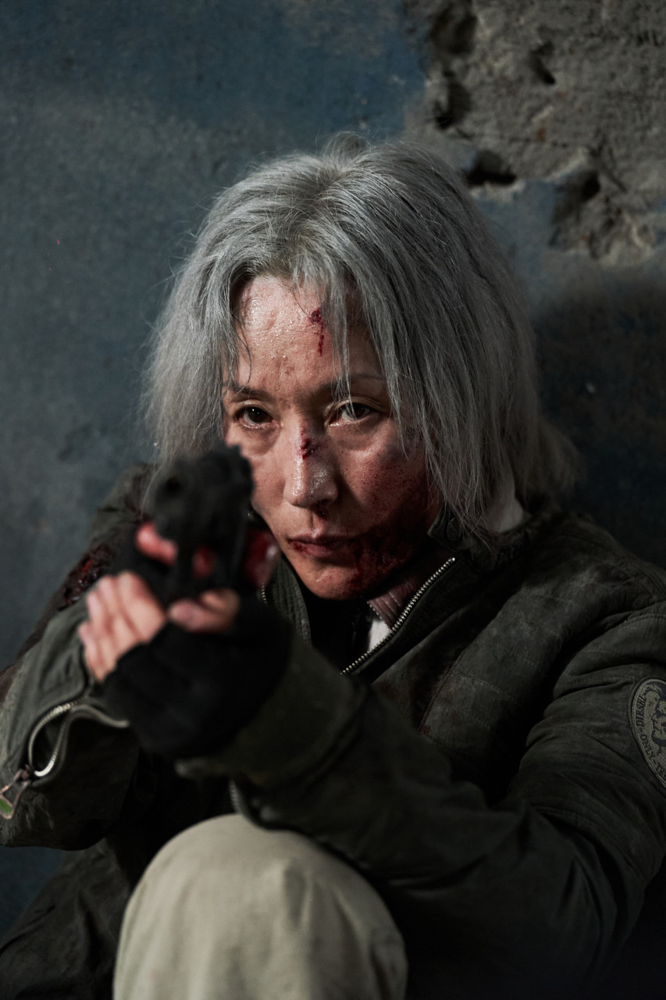
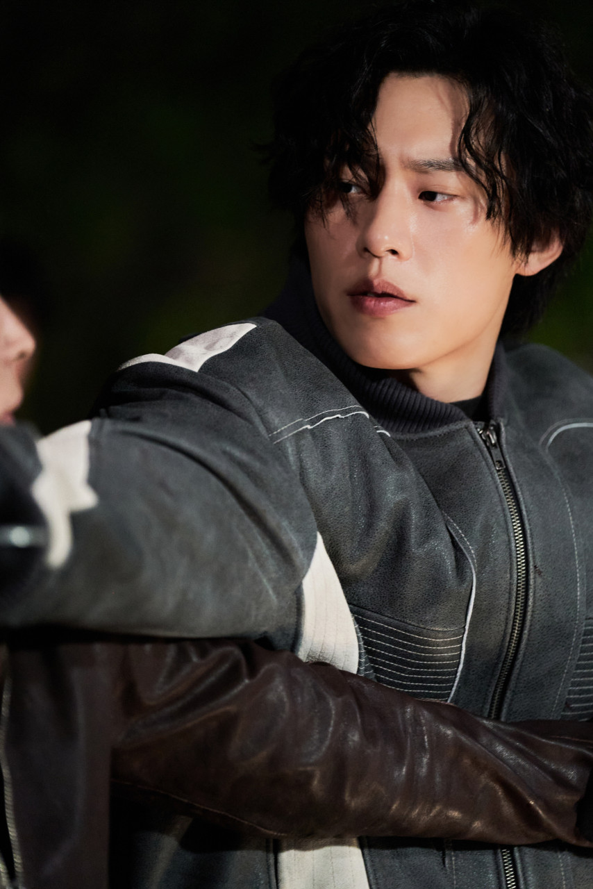
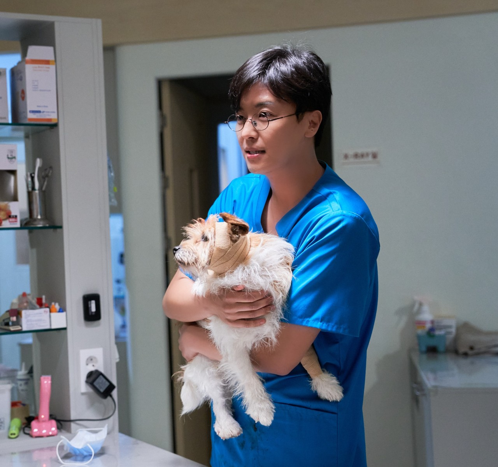

조각 ｜ 60대의 나이, 베테랑 킬러
40년간 단 한 번의 실패도 없이 의뢰를 처리해 온 청부살인업자. 날카롭고 완벽한 '처리' 능력을 업계에서도 인정받아 손톱이라는 별명을 가지고 있는 대모님이다. 세월의 흐름 속에 몸이 무뎌짐을 느끼던 중, 키우던 노견 '무용'와 강 박사의 가족을 통해 평생 느껴보지 못한 타인을 향한 연민과 '지키고 싶은 마음'을 품게 되며 냉철했던 그녀의 마음도 녹아내리며 혼란을 겪는다.

투우 ｜ 30대, 젊은 킬러
과거 조각과의 기묘한 인연을 가슴에 품고 살아온 인물. 어릴 적, 조각에게 보살핌을 받기도 하고 조각으로 인해 아버지를 잃기도 했다. 잠시나마 자신을 보살펴준 조각에게 복수심인지 애정인지 모를 감정을 품고 있다. 뛰어난 실력을 갖춘 젊은 킬러로, 늙고 병들어가는 조각의 주변을 맴돌며 늙은 조각의 모습과 이전과 달라진 모습을 들먹이며 도발한다. 조각이 새로이 가지게 된 소중한 것들을 위협하며 그녀를 마지막 한계까지 몰아넣는 인물이다.

강 박사 ｜ 30대 의사
부상당한 조각을 치료해 준 것을 인연으로 그녀의 삶에 스며든 의사. 아내와 사별 후, 부모님 그리고 딸과 함께 살고 있다. 조각에게 어떠한 의문도 품지 않으며 그저 의사로서의 사명감에 충실하다. 그의 따뜻한 가족과 어린 딸의 존재는 냉혹했던 조각의 내면에 커다란 균열과 변화를 일으키는 불씨가 된다.